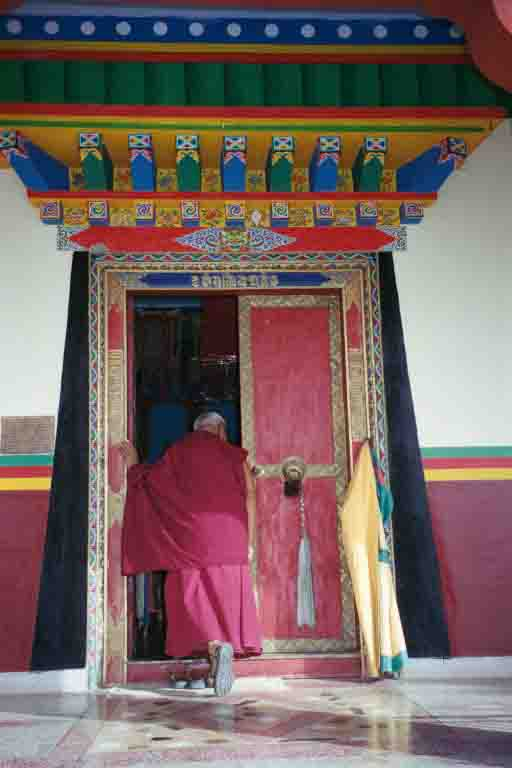
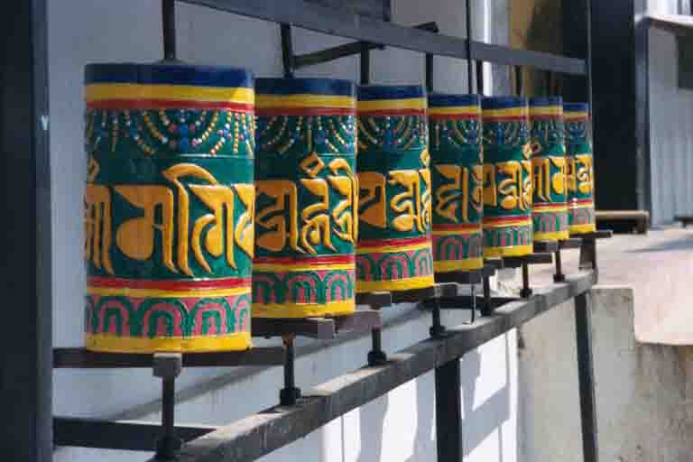
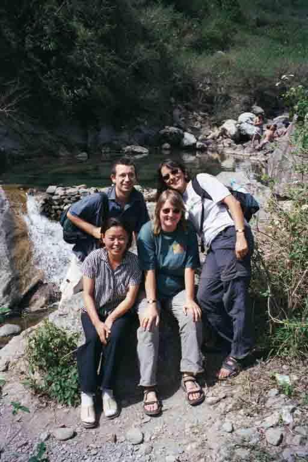

An assault on the senses
Nainital, India
Today is Holi - the official end of Winter - and a good excuse to cover everyone with colour. The 'colour' usually comes in the form of vegetable dye, but if you're unlucky, as we were this morning, it could also be metallic silver car paint! We took a walk into town from our lovely hotel, Fairhavens, on the hill overlooking Naini Lake in Nainital, in our newly very cheap set of clothes. The first person we met on the way down into town said 'Happy Holi!' and then placed a tiny spot of paint onto each of our foreheads. The next person who came past placed a little more and from there on in people were tipping whole bags of dye over our heads and slapping big dollops onto our cheeks! Of course, we weren't going to let them get the better of us and were fully prepared with our own bag of cerise pink paint. You should've seen the look of surprise we got when we accosted the first person with it!! We returned to Fairhavens covered with every colour of the rainbow and spent a good long time in the shower trying to scrub off the metallic silver stuff!!
Nainital is a lovely spot - very popular with Indian holidaymakers and, as we discovered when we tried to book into our hotel, a popular movie location too. On our first afternoon we had to fight through a huge crowd of people to get into the hotel gates and then the police wouldn't allow us in because they didn't believe that we were really guests. We eventually got through with a lady and her son in tow who told the policemen they were our friends. Once inside we found out what all the fuss was about - a fella in a tank top called Hritik Roshan, who is just about the hottest thing in Bollywood at the moment, and a girl in dungarees called Preiti Zinta, who is also pretty big stuff! Our new found friends were over-the-moon that they'd got to see their heros from so close up and we were just totally amused at the spectacle going on around us.
We've come here from Dehru Dun, which was one of the highlights of this trip for Sue, as we spent a day at the monstery she sponsors in the company of a wonderful monk called Yeshe Lama. Yeshe Lama was just the perfect host - he fed us, watered us and took us around the colony of Dekyling. We were probably a pretty amusing sight - four Westerners trying to keep up with a 67 year old monk clad in marron robes and a pair of Timberland sandels! He sure could shift, I can tell you! His neice, Lhanzi, translated while he spoke to us in Tibetan about why he had set up Lhodak Gaden Donnyling Monastery here in Dehru Dun. It was to keep the tradition alive of it's namesake in Tibet where he'd been a monk from a very young age. Lhodak Gaden in Tibet had been looted and finally annihilated by the Chinese after their occupation of Tibet and here in Dehru Dun it was being kept alive. Yeshe Lama was a wonderful person to spend a day with - he had a great huge chuckle and smiled a big toothless smile and captured our affection immediately. After spending a day with him it was very hard to drag Sue away, as I'm sure many of you can imagine, but when it did come to finally leaving her day was made complete when he presented us each with a white scarf as a blessing (I know I saw a few tears!)
Before that we spent a few days in the capital, Delhi. Delhi is a fantastic city - chock full of places to visit - and so our time there was hectic to say the least! We spent one whole day in Old Delhi, first visiting the Red Fort and then taking a cycle rickshaw around the crowded Chandni Chowk to the largest mosque in India, the Jami Masjid. All of the guidebooks tell you that the Red Fort is so badly preserved that it is totally devoid of character, but thanks to an amazing guide the place was bought to life for us. He talked of an Emperor on a golden peacock throne inlaid with some of the worlds most precious stones; of floors lain with red Persian carpets; punkahwallahs pulling golden threaded silk fans and of Nautch girls dressed in white, dancing around the pond in the central courtyard,casting their reflections in the water so the Emperor could see these beautiful girls mirrored. How could the place fail to be bought to life?
Chandni Chowk was a totally different experience, but these streets epitomised India for me. How so many cars, motor rickshaws, cycle rickshaws, cattlecarts, horse and traps, donkies, pigs, cows and people could fit into just a few roads is totally beyond me! We rode on the back of the cycle rickshaw along narrow allows - this one the muslim quarter, that one the Hindu one. Each clearly distinguishable by the goods on sale and the political flags flying high outside. And, above us, wove multitudes of electrical cables reminding us that only a few days earlier in another market in Delhi a fire had blazed after a cable had caught light and the crowds in the streets had prevented help getting through.
One night we wandered into the backstreets of Nizamuddin in search of the whirling dervish that Sue had so wanted to find in India. We had heard that qawwals are sung at the shrine of Nizumuddin, a famous Sufi mystic, every Thursday night and that from time to time the dervishes get worked up into such a frenzy from the music that they begin to whirl like spinning tops. I have no idea why this fascinates my wife so much, but as always, I bear with these things!! We found the shrine in a mosque just before evening prayers. This mosque was like no other I'd seen before. We entered the doorway and immediately in front of us was the ablution tank and behind that led a long alleyway walled with marble engraved with writings from the Quran and along the alleys were beggars, every inch of the way. One of Nizamuddin's ancestors came up and introduced himself as we entered the shrine proper and told us that unfortunately there was not going to be any singing in respect for the dead of the Gujurat riots. So, although Sue did see a dervish, he was quite the part with a velvet purple robe on and a hennaed beard signifying that he'd been to Mecca, she didn't get to see him whirl. But, the experience of the shrine really was quite something in itself!
So, it's been almost a year since we left England and over two months since we came to India. Like I said before, it can be real tiring at times, but India is truly a fascinating place. Not a day has gone past without seeing or hearing, or even sometimes smelling, something totally extraordinary. They say it's an assault on the senses, and it truly is!
Nainital is a lovely spot - very popular with Indian holidaymakers and, as we discovered when we tried to book into our hotel, a popular movie location too. On our first afternoon we had to fight through a huge crowd of people to get into the hotel gates and then the police wouldn't allow us in because they didn't believe that we were really guests. We eventually got through with a lady and her son in tow who told the policemen they were our friends. Once inside we found out what all the fuss was about - a fella in a tank top called Hritik Roshan, who is just about the hottest thing in Bollywood at the moment, and a girl in dungarees called Preiti Zinta, who is also pretty big stuff! Our new found friends were over-the-moon that they'd got to see their heros from so close up and we were just totally amused at the spectacle going on around us.
We've come here from Dehru Dun, which was one of the highlights of this trip for Sue, as we spent a day at the monstery she sponsors in the company of a wonderful monk called Yeshe Lama. Yeshe Lama was just the perfect host - he fed us, watered us and took us around the colony of Dekyling. We were probably a pretty amusing sight - four Westerners trying to keep up with a 67 year old monk clad in marron robes and a pair of Timberland sandels! He sure could shift, I can tell you! His neice, Lhanzi, translated while he spoke to us in Tibetan about why he had set up Lhodak Gaden Donnyling Monastery here in Dehru Dun. It was to keep the tradition alive of it's namesake in Tibet where he'd been a monk from a very young age. Lhodak Gaden in Tibet had been looted and finally annihilated by the Chinese after their occupation of Tibet and here in Dehru Dun it was being kept alive. Yeshe Lama was a wonderful person to spend a day with - he had a great huge chuckle and smiled a big toothless smile and captured our affection immediately. After spending a day with him it was very hard to drag Sue away, as I'm sure many of you can imagine, but when it did come to finally leaving her day was made complete when he presented us each with a white scarf as a blessing (I know I saw a few tears!)
Before that we spent a few days in the capital, Delhi. Delhi is a fantastic city - chock full of places to visit - and so our time there was hectic to say the least! We spent one whole day in Old Delhi, first visiting the Red Fort and then taking a cycle rickshaw around the crowded Chandni Chowk to the largest mosque in India, the Jami Masjid. All of the guidebooks tell you that the Red Fort is so badly preserved that it is totally devoid of character, but thanks to an amazing guide the place was bought to life for us. He talked of an Emperor on a golden peacock throne inlaid with some of the worlds most precious stones; of floors lain with red Persian carpets; punkahwallahs pulling golden threaded silk fans and of Nautch girls dressed in white, dancing around the pond in the central courtyard,casting their reflections in the water so the Emperor could see these beautiful girls mirrored. How could the place fail to be bought to life?
Chandni Chowk was a totally different experience, but these streets epitomised India for me. How so many cars, motor rickshaws, cycle rickshaws, cattlecarts, horse and traps, donkies, pigs, cows and people could fit into just a few roads is totally beyond me! We rode on the back of the cycle rickshaw along narrow allows - this one the muslim quarter, that one the Hindu one. Each clearly distinguishable by the goods on sale and the political flags flying high outside. And, above us, wove multitudes of electrical cables reminding us that only a few days earlier in another market in Delhi a fire had blazed after a cable had caught light and the crowds in the streets had prevented help getting through.
One night we wandered into the backstreets of Nizamuddin in search of the whirling dervish that Sue had so wanted to find in India. We had heard that qawwals are sung at the shrine of Nizumuddin, a famous Sufi mystic, every Thursday night and that from time to time the dervishes get worked up into such a frenzy from the music that they begin to whirl like spinning tops. I have no idea why this fascinates my wife so much, but as always, I bear with these things!! We found the shrine in a mosque just before evening prayers. This mosque was like no other I'd seen before. We entered the doorway and immediately in front of us was the ablution tank and behind that led a long alleyway walled with marble engraved with writings from the Quran and along the alleys were beggars, every inch of the way. One of Nizamuddin's ancestors came up and introduced himself as we entered the shrine proper and told us that unfortunately there was not going to be any singing in respect for the dead of the Gujurat riots. So, although Sue did see a dervish, he was quite the part with a velvet purple robe on and a hennaed beard signifying that he'd been to Mecca, she didn't get to see him whirl. But, the experience of the shrine really was quite something in itself!
So, it's been almost a year since we left England and over two months since we came to India. Like I said before, it can be real tiring at times, but India is truly a fascinating place. Not a day has gone past without seeing or hearing, or even sometimes smelling, something totally extraordinary. They say it's an assault on the senses, and it truly is!

Yeshe Lama and Lhanzi at Lhodak Gaden Monastery, Dehru Dun

The conjestion of Chandni Chowk, Delhi

Cycle rickshaw jam on Chandni Chowk, Old Delhi

Bollywood hoarding, Delhi

Yeshe Lama disappearing into the monastery

Prayer wheels at a Tibetan monastery in Nainital

Yeshe Lama, Lhanzi, Viv and H

Lhanzi and the crowd at the pools in Dehru Dun

Yeshe Lama, Lhanzi, Sue and Nathan